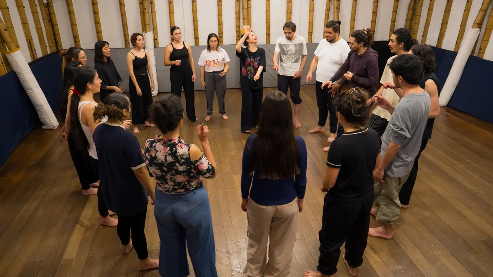
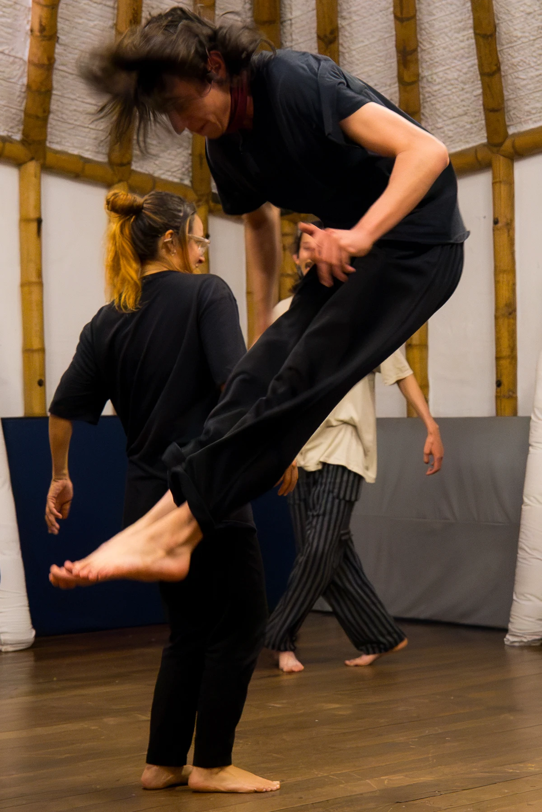
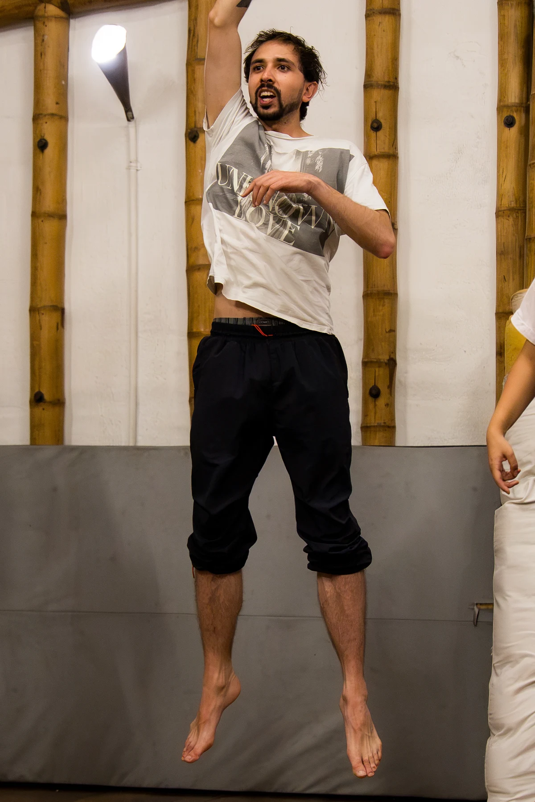
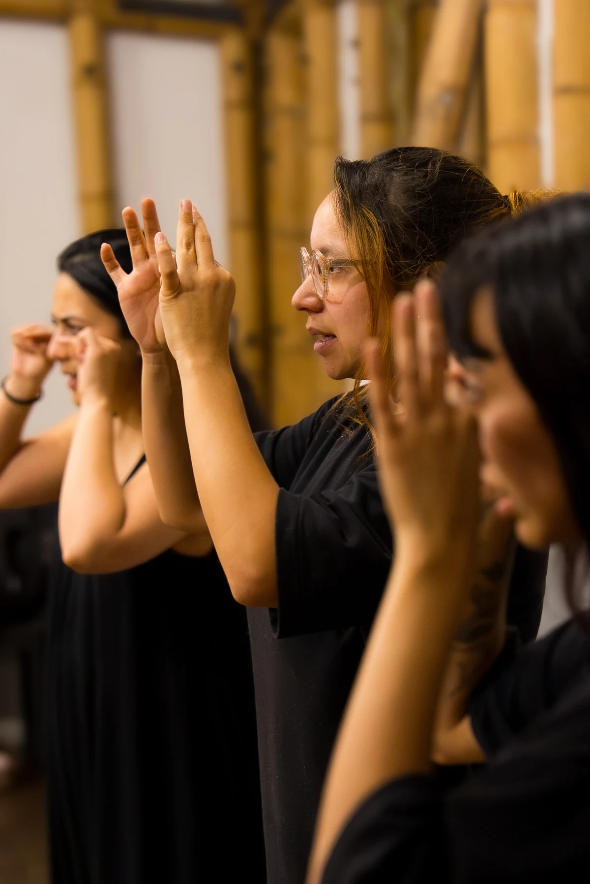

Talleres
Espacios de exploración, juego y creación.

Volver a Pedagogías
Calderos de creación
Cuerpo, voz, ritmo y juego como puntos de partida para explorar la creación colectiva.
Escribir a La Gruta
Entrenamientos psicofísicos
Una posibilidad de trabajo alrededor de la relación entre cuerpo, atención y acción escénica. El enfoque se construye según el grupo y su proceso.
Escribir a La Gruta
Sonar para sanar
Una posibilidad de exploración de la voz, el ritmo y la escucha colectiva. Podemos diseñar el encuentro según los intereses y el recorrido del grupo.
Escribir a La Gruta
Procesos específicos
Un espacio para conversar sobre el proceso que quieres acompañar y construir una propuesta pedagógica a su medida.
Escribir a La Gruta